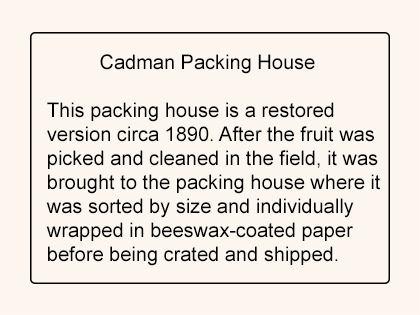
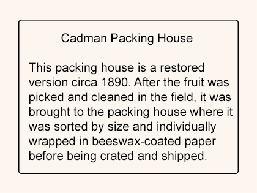

Once a year...
Pioneer Village located at 2491 Babb Road, Kissimmee, FL hosts a *free* annual event called Pioneer Day. This year it was held on Saturday, November 13th, 2021 from 10am to 4pm. Local actors dress up in costume to relive the late 1800's and a time when Kissimmee was still largely swamp land and home to several notable entrepreneurs and other determined settlers affectionately known as Florida Crackers. Here are the images I captured during my visit back in November 2021.
To get started, scroll down to the Pioneer Day slideshow below and click on the 'Prev' and 'Next' controls to manually browse through the slides. Otherwise, when your mouse pointer is outside the slideshow area, the slides will transition every 12 seconds automatically.
If you are more of an audio enthusiast, you can
"mouseover" and "mouseout" over the main banner
above (aka "hero image") to play and pause a Free Music Archive
track recorded by the Black Twig Pickers called "Brushy Fork of
John's Creek" (https://freemusicarchive.org/...). By the way, no jQuery was used to attach the onmouseover and
onmouseout events to the banner image...only pure JavaScript.
Enjoy!


 
